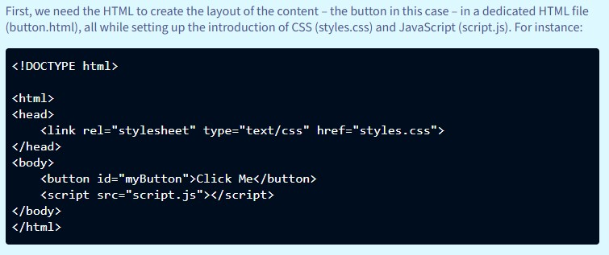
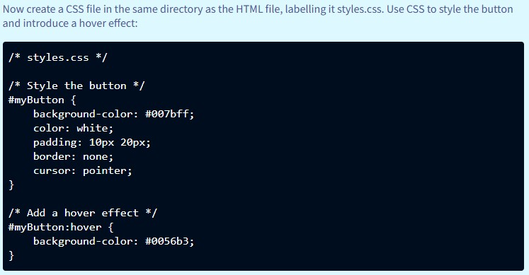
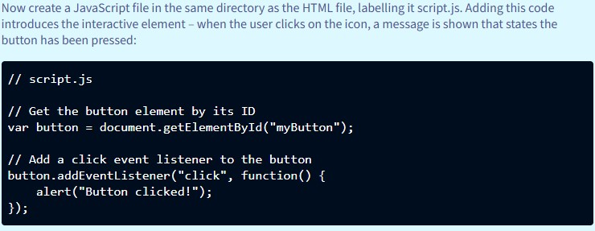

What is JavaScript?
Posted by Allan Bryan Vinluan
JavaScript is a browser-based programming language that brings interactivity to static web pages, applications and more. From animations to content updates, JavaScript is one of the three core web technologies, working alongside HTML and CSS to deliver dynamic web experiences.
What is the meaning of JavaScript
What is java script? Is JavaScript a programming language? The best way to understand is to imagine the web without the JavaScript programming language. Your online experiences would be static, just words and images that sit motionless on the screen. That’s because the core markup language for web page creation, HTML, is only designed to define how the content appears on the page. From creating titling hierarchies to defining paragraphs and hyperlinks, HTML offers a no-frills solution to get content online. Vital functions, sure, but not the ‘be and end all’ of web design in this modern era.
Now enter CSS, a language that allows developers to introduce different types of styling to HTML content from font and colour options to background colours. Again, CSS is an important toolset, helping you bring genuine style to a website – but it still lacks dynamism and interactivity.
So the answer to what is JavaScript used for is the ability to bring content to life, allowing devs to introduce almost endless dynamic options and objects to their websites. Add animations, introduce news tickers, display video, create pop-up chat windows – whatever ‘live’ element you see and interact with when online, it will most likely have been generated using JavaScript.
Defining JavaScript’s functions
What is .js and what does JavaScript do? The easiest way to envisage the relationship between HTML, CSS and the JavaScript programming language is to imagine making a superhero movie:
- HTML is the screenplay, defining and detailing the story, all the way from its overall structure right down to individual sequences and scenes – plus dialogue.
- CSS is the production’s design, creating the film’s world and its sets, dictating how each should be lit and shot.
- JavaScript language is the special effects that bring the film’s visuals to life, allowing our superhero and nemesis to seemingly do the impossible.
Importantly, all three elements are vital to one another. Have a poor script – aka badly formatted HTML – and it won’t matter how well shot the film is (CSS) or how many explosions there are (the JavaScript language), the film won’t work, leaving audiences disengaged, even bored. Conversely, you can have the greatest action script ever written but if the scenes are badly lit and the SFX jarringly bad, the story being told will suffer massively, again risking the audience leaving the cinema before the final credits roll.
Where did JavaScript come from?
Not Hollywood as the above analogy might suggest – but not far off geographically. JavaScript programming language was created in California by Netscape employee Brendan Eich in 1995. It took the programmer just 10 days to create the language that would ultimately transform websites for decades to come – but it did experience a rocky start.
While embraced by developers on its launch, there were several serious issues from browser compatibility to security vulnerabilities. Over the years though, the JavaScript language has been constantly developed and refined into the stable language it is today (though it still has issues – see below).
How does JavaScript work?
Many programming language are server-side, meaning any code is processed on the server before being delivered to the user. These are often referred to as compiled languages. However, the JavaScript programming language is different because it’s an interpreted language.
This means the language is executed in the user’s browser, allowing the the site’s JavaScript code to be processed ‘on the fly’ right there in the browser. It enables web developers to introduce dynamic elements straight to the user’s browser without the ‘middle man’ – the server – getting in the way and potentially slowing down the process.
All browsers come with their own JavaScript language engines to help users enjoy a dynamic experience when visiting a web site.
The process breaks down into three key steps:
- Your browser loads the web page including all the HTML, CSS and JavaScript files needed to present the page onscreen correctly.
- The HTML and CSS are the first files to be processed followed by JavaScript. Its code is processed in the browser, instead of being sent to a server for processing before being sent back to the browser.
- You can now interact with any interactive elements such as form filling, using image sliders or clicking on buttons with the JavaScript programming language updating the results of your actions in the browser without the need to reload the page.
What is a JavaScript library vs a JavaScript framework?
To make JavaScript coding easier, devs can access libraries that offer prewritten code for carrying out common JavaScript functions. This massively speeds up the coding process, enabling devs to concentrate on building functionality and app infrastructure without the busywork of recreating frequently used JavaScript code that already exists. Examples of JavaScript libraries include React and jQuery.
JavaScript frameworks are simply collections of these libraries, acting as repositories that can be used by coders to not only create specific functions but entire websites. Examples of frameworks include Angular and Node.js.
What is a JavaScript?
To understand how to use the JavaScript language, it’s best to place it in context. Here are some sample images.
HTML

CSS

JavaScript

Linking it together
Bear in mind the same JavaScript code can be added to multiple pages to save on development time and effort. Simply add a link to the script file in an individual page’s HTML file.
What is the difference between JavaScript and Java?
It’s understandable that a layperson might think JavaScript and Java must somehow be related. In reality, they are different with the JavaScript programming language used predominantly for enhancing website dynamism while Java is deployed for software building whether server-side or desktop-based. That said, Java’s programming language did act as the inspiration for JavaScript’s syntax.
What is JavaScript used for?
The JavaScript language can be deployed for many use cases and functions. For instance:
-
Creating web pages
As we’ve already highlighted, JavaScript brings web pages to life, enabling you to interact more deeply with the page’s content. Crucially, onscreen content can be interacted with and changed by the user – think pressing on a drop-down menu – without the need for the site to reload.
-
Game and apps
If you’re playing a web-based videogame or using an online app, JavaScript will most likely be running it. There’s no need to download and install any software as the game or app runs in the browser itself, enabling the user to jump straight into the action.
-
Coding mobile apps
To speed up mobile app creation, devs use JavaScript frameworks to create apps for iOS and Android.
-
Developing back ends
While synonymous with the web and client-side deployment, JavaScript is used for server-side work too. Using frameworks such as Node.js enables devs to build script code that is for server-side use only. Examples include real-time chat apps, video streaming and backend infrastructure for Internet of Things apps.
-
Developing front ends
The JavaScript programming language has made a name for itself in front end development. Devs can use popular JavaScript frameworks such as React and Cue to create different types of powerful front ends for services such as social media and video streaming platforms.
-
Enhancing AI
Developers are now using JavaScript libraries including TensorFlow.js to construct models powered by machine learning, creating new ways to analyse different data types, offer recommendations, and optimise natural language processing.
What are the pros vs cons of JavaScript?
Like all programming languages, JavaScript and its functions have their strengths and weaknesses. It’s best to identify what you need for your particular project and decide if the JavaScript programming language is the right fit for your development plan.
JavaScript advantages
-
Increased simplicity
Compared to other languages, the JavaScript programming language is simple to pick up and deploy, its extensive range of functions, libraries, frameworks and APIs often providing all the coding required for many projects. This makes developing in the language much easier than might be expected for newcomers. Best of all? The JavaScript community is constantly updating and improving the language to improve the functions on offer.
-
Greater versatility
JavaScript is used for many different use cases whether client-side or server-side dev work, making it an ideal ‘universal’ language that is supported by nearly all browsers. It can also run on many different devices and platforms, and is compatible with other programming languages such as Java and PHP.
-
Lesser loads
As the majority of JavaScript use cases are client-side, it frees the load on the server side. This maximises the resources available to a company by culling the volume of data requests to the server – removing the risk of network congestion – as well as reducing potential costs associated with the size and maintenance of enterprise web servers.
JavaScript disadvantages
-
Clashing browsers
Because there are so many browser types available, it means the JavaScript programming language can be interpreted differently by each. If unchecked, this can lead to inconsistencies in how the code is executed by the browser. To overcome this issue, devs must test any code on all types of major browsers. This should also include older versions of the browser to ensure any code functions correctly so users can enjoy the right experience, no matter how they are accessing the content.
-
Suffering security
This isn’t a problem with the JavaScript language itself per se. Instead, because it is being run client-side, i.e., on the user’s browser, it means the code is vulnerable to whatever security environment – and associated vulnerabilities – that the user has on their device.
-
Baffling bugs
Bugs can be challenging to identify and rectify as many HTML editors are not as methodical as others, plus browsers will not display error warnings. Combined, that makes JavaScript bug hunting a bigger headache for devs than other languages.
Can JavaScript impact on website performance?
JavaScript’s greatest strength – its ability to work exclusively on the client-side – is also its greatest weakness if not managed correctly. Remember, by deploying JavaScript, your website’s performance on the user’s browser is already taking a hit. This is because the browser is expected to do all the heavy lifting of downloading, analysing and executing the script or scripts. However, such performance hits are worth it in many cases as the JavaScript language offers such great interactivity and engagement for users.
Curb your enthusiasm
What the above issue does highlight is one of the most important lessons about JavaScript deployment: That any temptation to litter your web pages with multiple and dense instances of JavaScript script should be curbed. Too many end users will notice their browser’s performance slowing down – especially those who don’t have access to fast broadband or are using aging tech.
Also, the worse the performance of your website, the bigger the risk of users giving up in frustration and heading elsewhere – such as to a competitor’s website for instance. Bad JavaScript optimisation can also attract the unwanted attention of Core Web Vitals. These are the metrics that Google uses to determine what kind of experience your website is offering visitors. If your website’s performance is being harmed by the overuse of the JavaScript programming language, then you can expect your SEO ranking to take a hit in due course.
Wise words
In keeping with our Hollywood analogy, a wise uncle once said: ‘With great power comes great responsibility’. Get the balance of JavaScript on your site right, and you’ll reap the rewards. Get it wrong and it could end up hurting your bottom line, not helping it. Our advice? Tread carefully – and use Google Search Console or site checker audit solutions like Semrush to see if JavaScript is causing problems for your web pages.